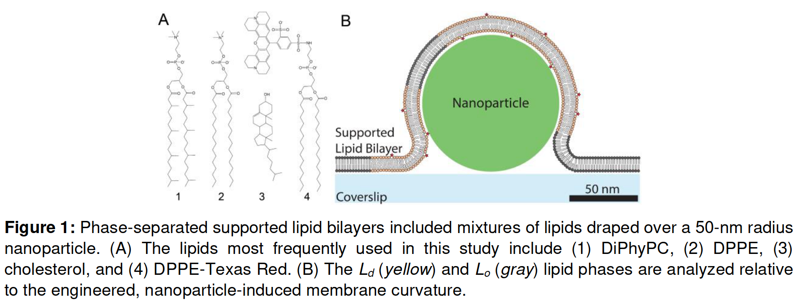

hopefully setting up final set of EM samples (more details below)
expecting to finish all EM and analysis by end of May
put together final manuscript and submit in June
phase separation theory project
hard to predict timeline when the other project takes priority
~1 month of full-time work to finish writing, coding, and troubleshooting this
iteration of the model (membrane with protein coat)
~1-2 months to set up final iteration of model (condensate, membrane, and
protein coat)
another 1-2 months to run simulations and compare with predictions from simple
geometric model about the energy barrier introduced by the condensate
another 1-2 months to put together a coherent story from model predictions and
simulations
this could potentially be a standalone paper
experimental component of phase separation project
layer 1: characterize physical properties of early CME protein condensates in
order to fit important parameters of model
contact angle with membrane can inform about relative surface tensions
FRAP speed can inform about viscosity
could potentially do this in vivo and/or in vitro
layer 2: experimentally test model predictions
the only experimental system I've come up with so far is using supported
lipid bilayers and pre-templated curvature like this:

from my model, I would predict a critical curvature below which there is
no further membrane invagination, but above which the nanoparticle is
internalized
perhaps I should look for a collaborator for this work?
applying for jobs
I would like to at least have the reconstitution project published and the
theory project in a packaged story before applying to postdocs
this will probably mean I will be applying in fall 2023… if that works out
with funding?
What can I start doing now to prepare for applying?
project updates
Project 4: Reconstitution of endocytic actin network
recent progress
EM
despite these regions appearing to have beads in the dissecting scope, we did
not observe any by EM after sectioning
currently processing one (final?) repeat of samples, maximizing our chances of
seeing something
10X higher bead concentration
currently experimenting with whether a longer incubation time of the fixed
reaction on the plate increases the bead stability
setting up non-correlative samples in parallel, so we don't worry about
beads floating away
if this doesn't work, I think it's time to make do with what we have
time lapse fluorescence imaging
finished collecting +/- LatA time lapses on airyscan
3 biological replicates
1-2 movies per replicate, ~1 hour each
~10 beads per movie
currently working out strategy for systematically 3D visualizing and recording
vesiculation events on each bead
show 3D visualization on lab workstation if there's time
next steps
score fluorescence time lapse data for membrane budding events and write code
for reproducible movies